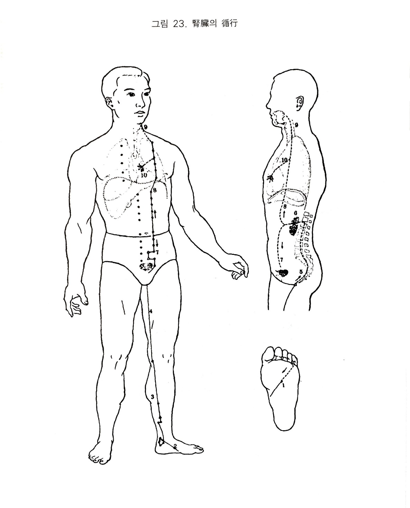

족소음신경
9. 족소음신경
1) 신장의 색체
신장은 족소음신경의 근원이 되며 그 경락을 관장하고, 방광과 표리가 된다. 오행으로 수성이며, 방위는 북방이고, 계절로 배당하면 동으로 한량. 자윤. 봉장의 속성이 있다. 신기가 귀로 통하고 있어 신정이 건강하면 귀가 잘 들리고, 노쇠 신고하면 머리가 백발이 되고 빠진다. 그러므로 그 영화가 머리털에 나타난다.
시진 했을때 흑색이 나타나면 체질적으로 신허증 또는 신. 방광병에 걸리기 쉽거나 이미 발병된 것이다. 흑색이 윤이 나면 생색이나 그을음 같이 검으면 병이 깊은 것이다. 체취. 구취나 배설물에서 썩은 냄새가 나기도 하고 음식에서는 짠 것을 좋아하는데 지나치면 상신한다.
정신면에서 정기와 지를 간직하고 경락이 설본에 이르니 침이 지나치게 나오며 신수는 오장의 정이 모여 되니 액의 역할을 한다. 신음 소리도 잘 내고 하품. 재채기도 자주 한다. 신은 수장으로 오장의 정액을 간직하고 오래 서 있으면 신경이 피로해져서 상골 한다. 한장이니까 전율한다.
2) 족소음신경의 순행
신경은 족소지의 끝 방광경에 이어져서 족저의 중심으로 사향해서 용천에서 시작된다. 족의 단상골 조면의 아래를 지나 내과의 뒤쪽을 따라 발뒤축 안쪽으로 분포된다. 삼음교에서 비. 간. 신의 삼음경이 교차되고 상행하여 슬와내측의 음곡에 이른다. 다시 위로 대퇴내측의 후방에 이르러 장강에서 독맥과 교차된다. 앞으로 나와서 임맥의 외방 오푼 되는 선으로 상행하여 제 양방에 맹유에서 신장에 속하고 하향하여 방광에 연결되며, 아울러 임맥의 관원 중극과 교회한다. 그 직행하는 것은 신에서 상행하여 횡격막을 통과하고 폐부로 진입해서 인후를 따라 설의 근본에 분포된다.
다른 하나의 지락은 폐에서 갈라져 나가 심장과 서로 연락되어 심포경의 기시부와 교차된다.
3) 신경의 병증
(1) 호흡기계
폐금은 모이고 신수는 자이니 폐기가 잘 순환됨으로써 신정이 나오게 된다. 한편 신수는 생기의 원천이므로 신기가 결핍하면 허화가 상승하여 천해하고 폐기가 상역하니 객혈도 나온다. 한약처방에서 (육미지황탕)에 맥문동과 오미자를 가미해서 신수를 자보하여 기침을 가라앉게 하는 경우가 바로 이 이치이다. 신허로 폐결핵이 발생하기도 한다.
(2) 소화기계
신병이 들면 하초의 기운과 중초의 기운이 서로 교류가 되지 않아 배가 고프지만 먹으려 하지 않는데 신허로 입맛이 떨어졌기 때문이다.
신경이 소복을 지나고 있어 토극수가 아니라 오히려 수승승토하여 비토를 누르니 장만하며, 수장이 한기를 감수하면 장만하게 된다. 장벽은 이질로서 하혈. 농혈. 거품 등이 나오는데 역시 수승승토이기 때문이다.
신허하면 습열이 성하여 색욕상신한 여노달이 되어 얼굴이 검고 수족심열. 오후발열 한다. 신은 수장이므로 정혈이 부족하면 진액을 공급하지 못해 갈증이 나고 소갈이 발생한다.
신은 전음. 후음으로 개규하고 있으며 신기가 원활히 돌지 않으면 신허성변비가 되며 또한 신기가 지나치게 허약해지면 하초가 공허하여 새벽에 자주 설사하게 된다. 이것이 신설이다.
신에 풍이 작용하면 기침하면서 청수를 토한다. 신은 생기의 원천이니 그 기가 허해져 상역하면 소복에서 심까지 분돈한는 신적이 발생한다.
(3) 순환기계
신경에 사기를 감수하여 상기하면 이 경락이 폐와 심포에 이어져 있어 번민도 하고 심부가 매달려 있는 것 같기도 하며 또는 심통도 온다. 하허상열로 보아야 한다.
(4) 흉협복통류
신경이 장강에서 전방으로 올라가면서 임맥의 양방 오푼을 따라가고 유문에서 흉부의 임맥방 2촌을 따라 올라가서 유부에 이르러 소복. 대복. 흉부를 지나면서 동통이 생기고 열이 있으면 실장이 된다.
신허하면 심과 서로 교류가 되지 않아 수화불교하니 흉중통이 온다.
(5) 운동기계
신경이 용천에서 시작되었으며 족내후측으로 상행하였으니 허하면 족경소약하고 궐냉하며 또는 허통이 있고 저리기도 하며, 실하면 족심열통. 각하통 등이 발생한다. 신은 생기의 원천이니 시기를 감수하면 수족이 궐냉해진다. 요는 신의 부이며 요통은 근본적으로 신허에서 온다.
신경이 장강에서 신장. 방광. 하복으로 이어지니 소복. 요. 척. 배에 통증이 오며 방광경은 신경과 표리관계이므로 장에 병변이 오면 부에도 같이 침범하므로 방광경의 척배. 항경. 견 등에 동통이 온다.
(6) 안이비인후구계
눈에서 흰자위는 폐에 속하고 검은자위는 간에 속하며, 동자는 신에 속한다. 정기가 올라오지 못하니 눈이 어두워 보지 못한다.
신의 규가 이이며 신기가 통하나 허한하면 듣지 못하고 귀에서 소리가 난다.
신경이 설본에 닿아 있으니 신실열에 혹은 하허상열로 설조인건하고 치는 골의 여분이니 신허하면 충치를 먹거나 까맣게 되거나 흔들리고 바스러진다. 신경에 사기가 있으면 객혈한다.
(7) 비뇨기계
신허하면 방광도 약해지니 소변을 오래 참지 못해 자주 소변을 본다. 신실증인 경우는 황적색이고 방광기가 작용을 못해 소변을 보지 못하며 산증이 되어 고환이 붓고 아프다.
(8) 생식기계
<소문. 영난비전론>에서 “신자작강지궁, 기교출언”이라 하였는데 곧 신경이 생식기 강화의 근본임을 알 수 있다. 만약 여자가 신기가 고르지 않으면 월경불순하고, 남자가 신허하면 음위. 몽정. 조루. 량한 등의 증상이 온다.
간은 근을 주관하므로 생식기의 힘줄을 좌우로 하고 소설지궁으로 배설되는 것을 조절한다.
신장은 생기지원으로 정액의 바탕이 된다. 신은 원기를 납입하여 혈을 모아 정기로 변화시켜 잘 간직하는 것을 주관하므로 간신 이경이 주로 생식기를 관장한다.
(9) 정신계
신은 오지 중에 공과 관계가 있다.신기가 부족하면 두려워하고 사람이 잡으러 와서 좆기는 듯이 심장이 빨리 뛴다.
신은 정과 지를 간직하니 뜻을 제대로 펴지 못하면 즐겁지 않다.
신수가 허하면 허화가 상승하여 상기하며, 신수와 심화가 서로 교류되지 않으면 심의 간직한 정신이 어지럽게 된다.
신수가 심화를 맑게 하지 못하니 몸이 무겁고 갑갑하다.
신은 음장으로 골을 양양하므로 음한이 심하면 골전질이 생긴다.
신은 생기의 원천이므로 신실열이 있으면 말을 하고자 하지 않는다.
(10) 기타
신경에 풍이 동하면 얼굴이 붓는다. 신허되어 신수가 얼굴로 올라오지 못하면 흑안이 된다. 흑색은 신병이다. 신정이 왕성하면 독맥이 활발하여 얼굴이 윤기가 나고, 신의 영화가 발에 있으므로 신수가 메말라 노인이 되면 백발이 되고 마리가 빠진다.
신은 골을 자양하고 골수를 충만하게 하므로 골고 혹은 수감하면 골위가 발생한다.
혈기가 저체되면 크게 종기가 난다. 신경이 장강에 이르니 신경에 사기가 있으면 치질이 발생한다.

오수혈
용천(정,목)
발바닥의 중심에서 발 끝쪽으로 밀어가면 ^자형으로 갈라진 주름살이 있는 곳에서 가장 깊은 곳이 혈자리로서 제2중족골과 제3중족골 사이가 된다. 취혈자세는 발가락을 구부리고 취혈하라는 설도 있지만 실지로는 발가락을 발등 쪽으로 재키는 편이 혈자리가 뚜렸해진다.
용천혈은 수경인 신경중의 목혈이므로 신. 방광계의 염통등 급발성질환류 즉 실증에 사하는 오행혈의 하나이다. 속설에는 여기를 찌르면 송장이 곤두선다는 자리로서 구급혈로서 좋은 자리이며, 밥ㄹ바닥에서 열감을 느낀다든가 지나치게 발이 차가운 사람,
불면증, 신장. 방광. 생식기계으 금. 만성질환에 응용되나 천. 해. 한열. 심계항진 등 심. 폐질환에도 상. 하초의 균형조절상 중요한 곳이나 허냉증에는 뜸이 더욱 좋다.
연곡(형,화)
족내과 전하방에 불쑥 나온 뼈가 주상골이며 주상골 아랫쪽을 눌러보면 조금 앞쪽으로 깊이 들어간 곳이 있으니 그곳이 연곡혈이요, 거기서 엄지발가락쪽으로 돌출되어 있는 뼈가 제1설상골과 제1중족골의 관절부로서 그 밑이 비경의 공손혈이 된다.
본혈은 수경중의 화혈이기 때문에 수허화실 즉 하초가 부실해서 생기는 상충(상기. 혈압상승) 증세에 쓰여지거나 심신이 같이 좋지 않을 때 쓰인다. 열성병, 정신질환, 심장병에도 쓰여지고 일반적으로는 인후부 비뇨기 생식기질환 부인병에 쓰이나 특히 허냉증세에 좋은 혈이요, 치아의 동요, 탈락에도 쓰인다.
태계(수,토,원)
발의 안쪽 복사뼈와 장단지 뒷쪽에 붙어 있는 큰 힘줄(아키레스건)의 사이이며, 후경골동맥의 맥동을 느끼는 곳이나 자침시에는 혈관을 찌르면 안된다. 태계혈은 신경의 원혈이기 때문에 신.방광계 즉 비뇨. 생식기계으 일체질환에 응용되며 수토혈이기에 비토의 소화작용에도 관여한다.
그이유인즉 신기(원기)가 약해서 중엉토의 작용을 제대로 영위치 못하는 경우, 그 원기를 보완해 주는 것이나 오행학적으로 보면 수기를 작동시켜 화 토를 윤토로 화성시키는 것이다. 그러나 수가 과승상태에 있게 되면 습토가 된다. 그러므로 그 적정을 기하는 것이 오행보사의 진수일 것이다.
태계혈은 수경중의 토혈이므로 비위의 작용을 도와주거나 비 신 즉 소화기와 비뇨. 생식기계가 같이 이상할 때에도 쓰여진다. 이동단설에 태계혈을 선용함은 위기를 인장하여 양도에서 작용시킴을 목적함이요, 습토로서 신을 제극시킴이 아니라고 하였다. 일반적으로는
열병을 앓은 뒤에 오는 사지궐냉, 해수.천식, 소화장애, 변비, 구토, 유종 등에 좋고 치아의 한냉감, 동요, 탈락, 이호, 난청에도 좋은 혈이다.
복류(경,금)
경골하단인 내과의 정중에서 윗쪽으로 2촌으 높이이나 아키레스건의 바로 안쪽이 된다. 본혈은 수경중 금혈이므로 금생수의 원리에 의해 복류가 신경의 모격이 되기 때문에 신경의 허증에 보한는 혈이다. 신경의 허증 증세로는 족. 슬. 요 또는 전신이나 수족의 냉증. 요통. 소변을 자주 보거나 보고나도 개운치 않은 경우,
몸이 무겁거나 어지러움, 귀에서 소리가 나거나 난청, 치아가 시리거나 잘 흔들림, 사업에 대한 의용이나 성욕의 감퇴, 자궁 등 생식기계가 원래 약하거나 나빠진지 오래인 경우, 상기가 잘 되는 고혈암(중풍요인인 하허증세), 성욕허동 등 매거키 어려울 정도로 많으나 요약하면 인체의 약화 노쇠의 근원이 신기에 있으므로
생명력의 근원이 약화된 현상에 복류가 바로 신기 보완하는 자리이다. 신허요통이나 족냉. 낭습 등에 복류에 보침을 놓으므로서 탁효가 있음을 보면 가끔 신비감에 사로 잡히기도 한다.
음곡(합,수)
무릎을 반쯤 구부리고 안쪽의 주름살이 있는 곳을 더듬어 보면 윗쪽의 힘줄이 반건양근, 부고근, 봉장근 등이고, 뒤의 오금쪽에 있는 가느다란 힘줄이 반막양근이니 두 힘줄 사이의 손가락 하나 들어 갈만한 함중이 음곡혈이다. 본혈은 수경중의 수혈로서 신. 방광. 자궁 등 기능의 혀약이나 실질의 이변에도 주요한 혈이기
때문에 활용되는 이수혈로서 부종이나 소변관계 특히 부인병에도 좋은 혈이며 남자의 발기부전 슬관절의 내측통에 쓰이기도 하나 외측인 양부위 보다 내측인 음부위의 통증은 잘 낳지 않는 경향이 있음을 볼 수 있다.